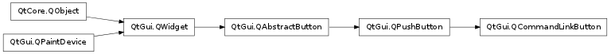

QCommandLinkButton ¶

Synopsis ¶
Functions ¶
- def description ()
- def setDescription (description)
Detailed Description ¶
The PySide.QtGui.QCommandLinkButton widget provides a Vista style command link button.
The command link is a new control that was introduced by Windows Vista. It’s intended use is similar to that of a radio button in that it is used to choose between a set of mutually exclusive options. Command link buttons should not be used by themselves but rather as an alternative to radio buttons in Wizards and dialogs and makes pressing the “next” button redundant. The appearance is generally similar to that of a flat pushbutton, but it allows for a descriptive text in addition to the normal button text. By default it will also carry an arrow icon, indicating that pressing the control will open another window or page.
- class PySide.QtGui. QCommandLinkButton ( [ parent=None ] ) ¶
- class PySide.QtGui. QCommandLinkButton ( text [ , parent=None ] )
- class PySide.QtGui. QCommandLinkButton ( text , description [ , parent=None ] )
-
Parameters: - description – unicode
- parent – PySide.QtGui.QWidget
- text – unicode
Constructs a command link with no text and a parent .
Constructs a command link with the parent parent and the text text .
Constructs a command link with a text , a description , and a parent .
- PySide.QtGui.QCommandLinkButton. description ( ) ¶
-
Return type: unicode This property holds A descriptive label to complement the button text.
Setting this property will set a descriptive text on the button, complementing the text label. This will usually be displayed in a smaller font than the primary text.
- PySide.QtGui.QCommandLinkButton. setDescription ( description ) ¶
-
Parameters: description – unicode This property holds A descriptive label to complement the button text.
Setting this property will set a descriptive text on the button, complementing the text label. This will usually be displayed in a smaller font than the primary text.